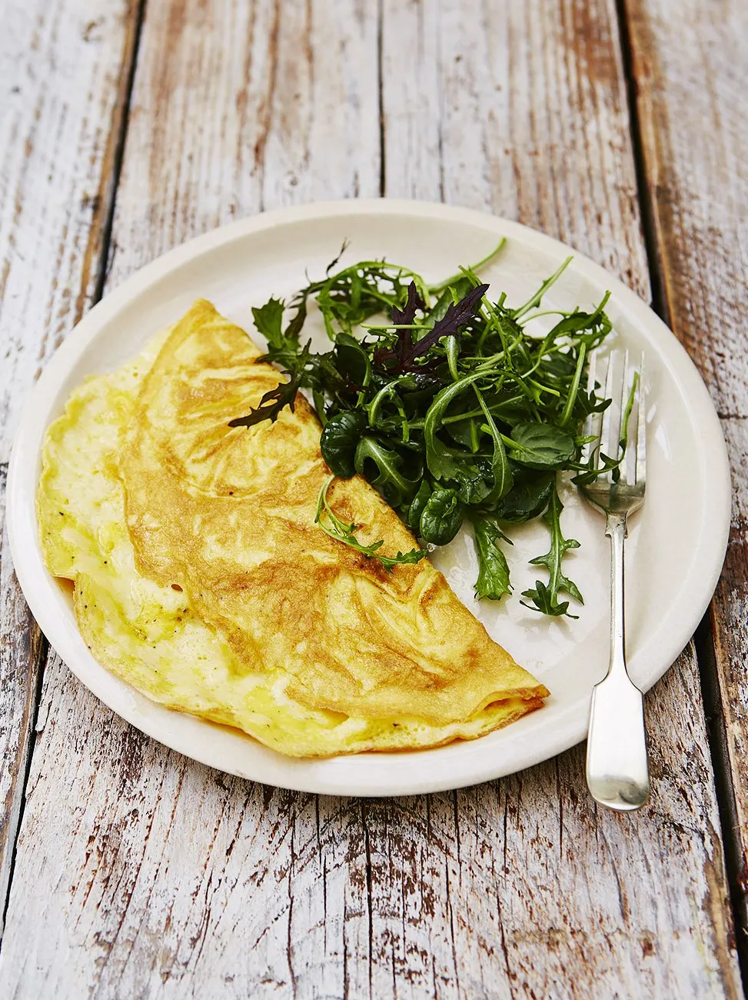

Omelette

Omelette is great for breakfast, brunch, lunch and beyond. Be creative and experiment with different fillings!
Ingredients:
- 2 large free-range eggs
- 1 small knob of unsalted butter
- 1 small handful of grated Cheddar cheese , (optional)
- olive oil
- 2 or 3 field-type mushrooms
Steps:
- Crack the eggs into a mixing bowl with a pinch of sea salt and black pepper. Beat well then set aside.
- Roughly chop the mushrooms and add to a hot frying pan with a small knob of butter, a drizzle of oil and a pinch of salt and pepper.
- Fry and toss around until golden, then turn the heat down to medium.
- Add the eggs and move the pan around to spread them out evenly.
- When the omelette begins to cook and firm up, but still has a little raw egg on top, sprinkle over the Cheddar.
- Using a spatula, ease around the edges of the omelette, then fold it over in half.
- When it starts to turn golden brown underneath, remove the pan from the heat and slide the omelette on to a plate.
This recipe and photo are borrowed and adapted from Jamie Oliver.